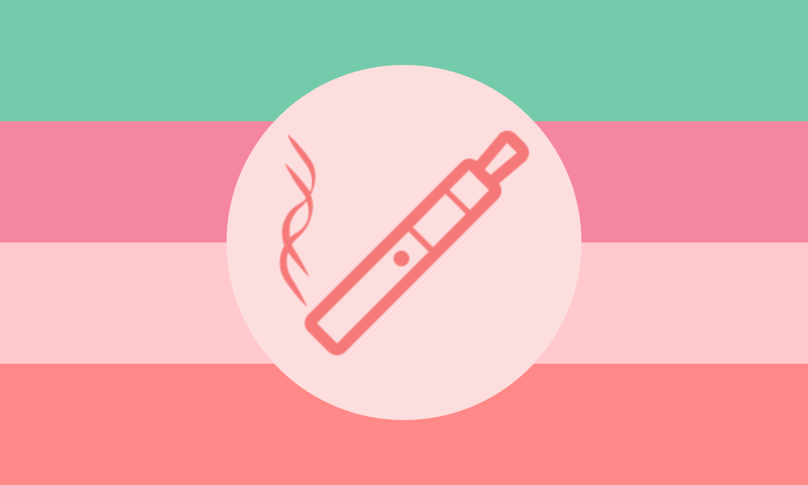

Watermelon-Vitavapic !! :: Vitavapic subgender related to Watermelon flavored Vita inhalers. Can be either the aesthetic of vaping this flavor, you feel it the most while vaping this flavor, or your gender feels metaphorically similar to vaping this flavor.